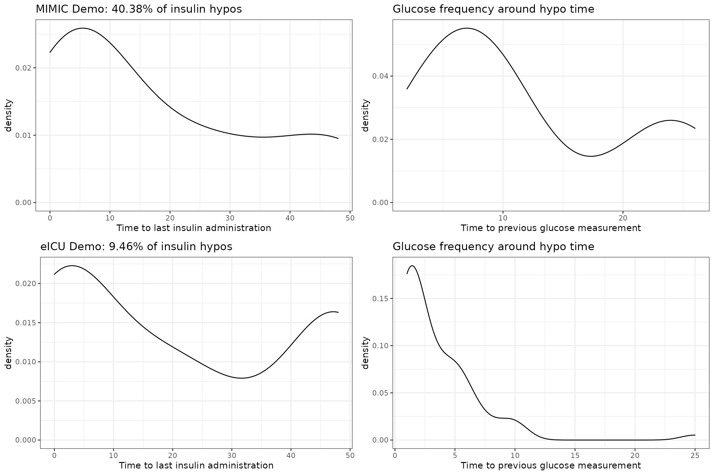

Hypoglycemia
hypo.RmdMedical Background
Hypoglycemia is strongly and independently associated with an increased mortality in the critically ill [1–6]. It also causes major physiological stress and, if severe, neuronal injury [6–9]. In sedated, critically ill patients, hypoglycemia is typically clinically silent and can only be detected by blood glucose measurement. Such measurements often occur only at two to four hourly intervals, and depending on level of patient care, even less frequently [10], therefore creating substantial risk of unrecognized hypoglycemia.
Consequently, the ability to predict hypoglycemia hours before it occurs would allow clinicians to implement preventive measures, increase patient safety, and perhaps improve clinical outcomes. With the advent of availability of large scale electronic health record (EHR) data, this problem can be further investigated by examining the interplay of key variables that relate to glycemic control.
Known relevant factors that affect glycemia and might be indicative of future hypoglycemic episodes, which are also routinely collected and available from EHRs, include, the degree of metabolic stress (estimated by lactate levels), the degree of hemodynamic stress (represented by mean arterial pressure and vasopressor therapy), the degree of hepatic physiological reserve (available as liver function tests), the severity of critical illness using for example the sequential organ failure assessment (SOFA) score [11], the administration of insulin, as well as preceding and current blood glucose concentrations. Lactate levels may be particularly important because of the central role of lactate as a key metabolic intermediary [12, 13] and major hepatic gluconeogenic precursor [12, 14, 15].
Recently, randomized controlled trials have attempted to control the blood glucose level according to the average blood glucose level prior to ICU admission (as measured by the HbA1c). In such an RCT, [16] again confirmed the dangers of hypoglycemia, which is hypothesized to be the reason why their individualized intervention to control glucose failed [17]. Similar studies in the future might be performed in conjunction with an AI-based alarm system for hypoglycemia, further emphasizing the practical importance of the discussed prediction problem.
Suggested Prediction Problem
Patients who enter an intensive care unit (ICU) are monitored for blood glucose levels. The commonly used target range for blood glucose in critiically ill patients is between 108 mg/dL and 180 mg/dL. However, instances in which glucose levels drop below \(70\) mg/dL are considered dangerous, and it is of interest to prevent them.
A graphical representation of how a hypoglycemic event might occur in the ICU.
The following parameters are especially relevant for the prediction problem: \[\begin{align*} L &= \text{how early prior to onset is the prediction valid} \\ R &= \text{how much in advance is the prediction valid} \\ \end{align*}\]
We consider the choices of \(L = 12\) hours and \(R = 1\) hours as appropriate. Furthermore, when designing an alarm system, to prevent alarm fatigue, alarms cannot ring too frequently, so we consider using alarm silencing, defined by the parameter:
\[\begin{align*} \delta = \text{duration of alarm silencing after the alarm is raised} \end{align*}\] Throughout, we consider the fixed value of \(\delta = 1\) hours.
Reproducible Code
After defining the prediction problem and the key parameters, we provide code that can be used to generate data which is ready for AI prediction models.
srcs <- c("mimic_demo", "eicu_demo")
phys <- c(
"alt", "alp", "ast", "basos", "bicar", "bili", "ca", "cai", "tco2", "cl",
"crea", "dbp", "eos", "fio2", "hr", "hct", "hgb", "inr_pt", "lact", "lymph",
"mg", "mch", "mchc", "mcv", "map", "neut", "o2sat", "pco2", "po2", "ph",
"phos", "plt", "k", "pt", "ptt", "rdw", "rbc", "resp", "na", "sbp", "bun",
"wbc", "temp", "alb", "ck", "etco2", "crp", "gcs", "pafi", "safi",
"map_beta50", "map_beta100", "map_beta200", "be", "bili_dir", "bnd", "ckmb",
"esr", "fgn", "glu", "bmi", "age"
)
meds <- c("tpn", "enteral", "cortico", "mech_vent", "dex_amount", "ins_ifx")
dat <- load_concepts(c(phys, meds), srcs, verbose = FALSE)
# carry-forward for physiological values
dat <- fill_gaps(dat)
dat <- replace_na(dat, type = "locf", vars = phys)
# 0-imputation for insulin values
dat <- replace_na(dat, 0, vars = meds)
# determine the time of onset
dat <- dat[, hypo := glu < 70]
# keep data only upto first hypo event
dat <- dat[, past_hypo := cummax(hypo), by = c(id_vars(dat))]
dat <- dat[, past_hypo := shift(past_hypo), by = c(id_vars(dat))]
dat <- dat[past_hypo == 0 | is.na(past_hypo)]
dat <- dat[, past_hypo := NULL]
# carry-backward the hypo label for 12 hours
dat <- dat[, hypo := -hypo]
dat <- slide(dat, hypo_lab := max(abs(hypo)), before = hours(0L),
after = hours(12L))
dat <- replace_na(dat, 0, vars = "hypo_lab")The .parquet files generated by the above code can be used for training and testing.
Evaluation Code
After developing the AI model for prediction, a key step is to evaluate its potential clinical utility. For this purpose, we suggest an evaluation scheme, which can be performed using the patient_eval() function exposed in our repository. The data that needs to be fed into the function should be formatted as follows:
In particular, the input to the patient evaluation is a long-format table that contains a column named hypo_prob with the probability predictions. The label column hypo_lab determines whether it is desired to raise an alarm at this timepoint. The patient_eval() function then computes the sensitivity, specificity and the positive predictive value (PPV) over a range of prediction thresholds, and can be simply ran using the following code:
patient_eval(evl_dat, delta = hours(1L), score_col = "hypo_prob",
tpp = "hypo_lab")Epidemiology
When consider prediction, the epidemiology of the prediction problem is often very relevant. For this reason, we investigate the following
- prevalence of hypoglycemia in each dataset,
- onset times of hypoglycemia in each dataset,
- the time between the most recent insulin administration and onset of hypoglycemia in each dataset.
Insulin to Hypoglycemia Times
Hypoglycemic events that are preceded by insulin administration are especially interesting, since possible preventative action only requires reducing the insulin amount. Therefore, for each dataset, we look at (i) the proportion of hypoglycemic events that are associated with an insulin administration; (ii) the frequency of glucose measurements around the time of hypoglycemia.
